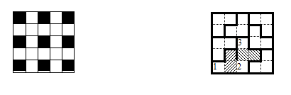

Peter marks several cells on a $5 \times 5$ board. His friend, Richard, will win if he can cover all of these cells with non-overlapping corners of three squares, that do not overlap with the border of the square $($you can only place the corners on the squares$)$. What is the smallest number of cells that Peter should mark so that Richard cannot win?
Example: Peter can mark the cells shown in the picture on the left. Then Richard cannot cover more than one marked cell with one corner. But nine corners that do not overlaps do not fit on the board, since 27$>$25.
 Evaluation: if Peter marks fewer than nine cells, then at least one of the black cells specified in the example will not be marked. Then Richard can cover all of the cells of the board, except this one. Indeed, in the figure on the right, the shaded cells can be added to the corners so that only one of the cells 1, 2 or 3 is free. If you want to exclude another black cell, the pattern needs to be rotated.9 cells.
5 points